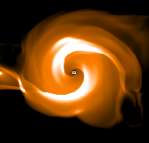
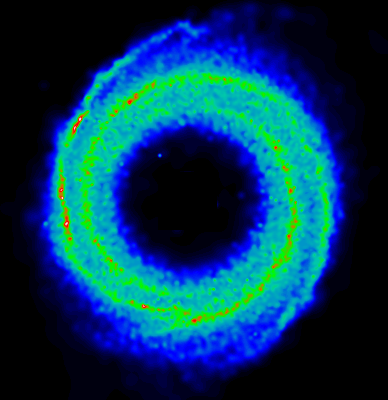

Spiral
shocks in accretion discs*
Henri M.J. Boffin
Dept. of Physics and Astronomy,
Cardiff University of Wales
M. Makita, H. Yukawa, T. Matsuda
Dept. of Earth and Planetary Sciences,
Kobe University, Japan
Using the Smoothed Particle
Hydrodynamics method as well as a Simplified Flux Splitting finite-difference
code, we study the formation and evolution of accretion discs in binary
systems. Although we have to restrict ourselves to a not so realistic polytropic
equation of state, these simulations compare favourably with the
recent observations of spiral shocks in IP Peg.

Dwarf novae are a subclass
of cataclysmic variable stars in which a late-type secondary fills its
Roche lobe and transfers mass to a white dwarf primary via an accretion
disc. Dwarf novae have quasi-periodic outburst of typically 2 to 5 magnitudes
which are believed to be caused by an extra release of gravitational energy
as a result of a temporary increase in the rate of mass transfer through
the disc. IP Peg is an example of the U Gem type of Dwarf novae. It has
an orbital period of 3.8 hours and a mean time between outburst of about
95 days. Its rather high inclination allows the observation of eclipses
of the accretion disc around the 1.05 M white dwarf by the 0.5 M M4 V secondary.
In a remarkable observation,
Steeghs, Harlfatis
& Horne (1997, SH2 in the following), using the Doppler Tomography
technique, found the first convincing evidence for spiral structure in
the accretion disc of IP Peg observed during outburst. Those spiral structures
are very similar to the spiral shocks discovered by Sawada, Matsuda
& Hachisu (1986) in 2D finite difference numerical simulations in accretion
discs.
In this poster, we
want to compare 2D numerical simulations of accretion disc with the observations
of SH2. We
performed our simulations using both a Smoothed Particle Hydrodynamics
(SPH) method (Monaghan 1992) and a Simplified Flux Splitting (SFS) finite-difference
scheme (Shima & Jounouchi 1997). In each case, we consider a
polytropic gas and a binary with a mass ratio of 0.5. Mass is flowing from
the inner lagrange point (at x=-0.57, y=0) toward the primary. We simulate
a circular region of radius 0.6 in the orbital plane around the primary.
Results
We will now discuss the
results of our SPH simulations for gamma=1.2. We followed this simulation
until about 19 orbital periods. The final structure of the flow, modelled
with 19954 particles, is shown in Fig. 1.
The now typical spiral shocks are clearly seen. Figure
2 illustrates the azimuthally averaged density as a function of the
distance to the primary star for three different moments in time. Figure
3 presents the time evolution of the mass of the disc as well as the
accretion and escape rate. The fact that the accretion rate saturated is
a good indicator that we reached a quasi-steady state. It is also noteworthy
that less than half the injected matter was accreted. A big fraction of
the mass was in fact ejected from the system. We therefore conclude that
the often quoted conservative mass transfer hypothesis may not be a good
representation of what really happens. Figure
4 shows the density map obtained by our finite-difference code. The
similarity between Fig.1 and 4
is quite striking, increasing our confidence in the numerical results.
 Doppler
map
Doppler
map
As the main aim of this
paper is to try to see if we are able to explain the observations of SH2,
we produce doppler
maps and binary phase-velocity maps. To do so, we consider only the
particles in the disc and discard those of the Lagrangian flow. This is
done because we think that due to the necessarily crude treatment of the
inner Lagrangian boundary and to the assumption of a polytropic equation
of state, the inner stream is not properly modelled. In particular, we
are not confident as to whether or not we should give any physical meaning
to the interaction of the inner stream and the outer accretion disc, which
produces a shocked layer.
The removal of these
particles in our Doppler maps is also motivated by the fact that during
outburst, the hot spot is generally not seen. On the other hand, the secondary
is generally present as it is believed to be irradiated by the disc luminosity.
To take this effect into account, we superpose on our density maps a gaussian
spot at the position of the secondary. Note that when comparing our density
maps with the observations of SH2,
we assume that there is a 'one to one' relation between density and line
emission flux. This is not necessarily true. In order to facilitate the
comparison, we produce our maps at the same resolution as SH2,
that is with a spacing of 38 km/s and using 15 spectra covering 60 % of
the binary orbit (see Fig. 5). We also
show in Fig. 6, the coverage of the full
binary orbit at much higher resolution.

Discussion
Very recently, Godon
et al. (MNRAS, submitted) have also tried to reproduce the spiral shocks
observed in IP Peg. They conclude that it is only possible to reproduce
the correct pitch angle of the spiral when the discs are unrealistically
hot for cataclysmic variables.
We use a polytropic
equation of state (eos) in our simulations. It is well known that with
such an eos, the discs become unphysically hot, whatever the initial temperature
of the discs. In fact, the discs will evolve toward a given fraction of
the virial temperature; the fraction being just a function of the polytropic
index, gamma.Thus, we may expect that in our simulations, the spiral features
will be a strong function of gamma, and will in fact depend only on that.
In Fig. 7, we show the results of our finite
difference code for 4 different values of gamma: 1.01, 1.05, 1.1 and 1.2.
The dependence of the pitch angle on gamma is obvious : the larger gamma,
the wider the spiral. It must be noted that even in the nearly isothermal
case of gamma=1.01, the disc finally evolves to a very hot state. In this
respect, comparison with observations may be hampered.
We have therefore run
another set of simulations, where we use an isentropic equation of state,
instead of a polytropic one. In this case, the temperature remains always
very close to the initial value. The results of isentropic runs are compared
with those of polytropic runs using gamma=1.2 and two case values for the
initial sound speed: 0.1 and 0.01 times the orbital velocity (Fig.
8). While we cannot see any significant differences between the two
polytropic runs, there is a clear distinction between the two isentropic
runs : the cooler disc has a very tightly wound spiral, in agreement with
previous authors, but in contradiction with the observations, which require
a cool disc with a wide spiral. As is evident from the discussion above,
however, our conclusion is very dependent on the equation of state we use.
Another possibility would be that the observed spirals are formed in a
hotter corona above the disc.
*
This is the text of a poster presented at NAM98 (St-Andrews;
March 1998)
Henri Boffin
5/26/1998